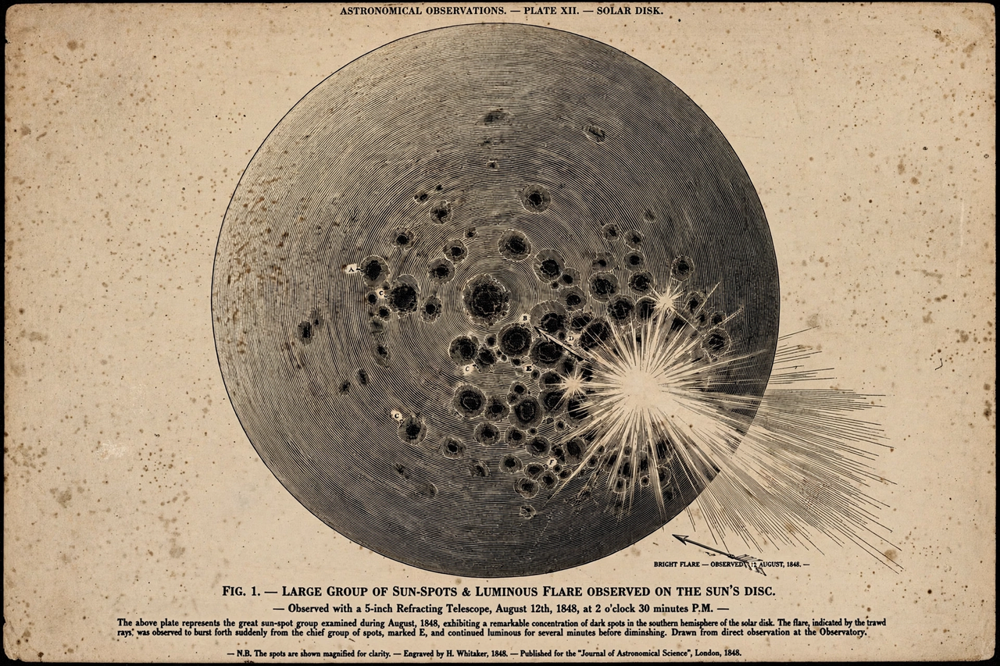

From Wikipedia, the free encyclopedia
| Carrington Event | |
 Carrington's drawing of the sunspot group of 1 September 1859 | |
| Date | 1–2 September 1859 |
| Type | Geomagnetic storm / solar storm |
| Cause | Coronal mass ejection following a major solar flare |
| Observed by | Richard Carrington; Richard Hodgson |
| Estimated intensity | Dst ≈ −850 to −900 nT (estimates vary) |
| Effects | Telegraph failures and fires; aurorae seen in the tropics |
The Carrington Event was the most intense geomagnetic storm in recorded history, peaking on 1–2 September 1859 during solar cycle 10. It was associated with a very bright solar flare observed by the English astronomers Richard Carrington and Richard Hodgson — the first solar flare ever recorded. The storm created strong auroral displays that were observed globally and caused sparking and fires in multiple telegraph stations.
On the morning of 1 September 1859, Carrington was sketching a large group of sunspots when he saw two patches of intense white light brighten and fade over about five minutes — a "white-light flare". Some 17.6 hours later, a fast coronal mass ejection reached Earth (typical transit times are several days, indicating an exceptionally fast ejection, aided by an earlier ejection that had cleared the interplanetary medium). Magnetometers recorded a huge disturbance; the magnetic crochet effect of the flare itself was also registered at Kew Observatory.
Aurorae were seen around the world, including in the Caribbean, Hawaii, Mexico, Queensland and other tropical locations; in the Rocky Mountains they were bright enough to wake gold miners, who began preparing breakfast, and newspapers could reportedly be read by auroral light. Telegraph systems across Europe and North America failed; operators received electric shocks, telegraph paper caught fire from sparks, and some systems continued to send and receive messages powered only by the induced "auroral current" after their batteries were disconnected.
A Carrington-scale storm today is estimated to be capable of damaging electricity grids through geomagnetically induced currents, degrading or disabling satellites, disrupting GPS and radio communications, and causing economic losses potentially in the trillions of dollars. Ice-core and tree-ring evidence (notably the 774–775 AD event) suggests still larger solar particle events have occurred in the past. In July 2012 a Carrington-class coronal mass ejection narrowly missed Earth, crossing the orbit at a point Earth had occupied about a week earlier, an event detected by the STEREO-A spacecraft. The Carrington Event remains the benchmark for worst-case space-weather planning by governments and grid operators.